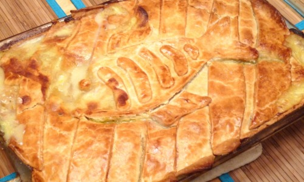

Kiki's Fish pie

Zutaten
- 4 fillets of herring, or 3 fillets of another larger, white fish (we used rockfish, you could use sole, tilapia, or cod)
- 1 leek
- 1 medium while onion
- 1 carrot
- 5 medium potatoes (bakers or russets)
- 2 cups spinach
- 3 eggs
- 2 tablespoons deli style or whole ground mustard
- 2 bay leaves
- 3 cups milk
- 2 tablespoons salt
- 2 tablespoons pepper
Vorgehen
- Cut up the potatoes and put them in a pot of boiling water. Boil for about 5 minutes, then add in two eggs and boil for 5 more minutes. Take out the eggs, and strain the potatoes. Then mash the potatoes in a bowl with 2/3 cup of milk.
- Add the mashed potatoes to the bottom of your casserole dish, saving about 1 potato worth of mash in the bowl.
- Slice all of the vegetables and the hardboiled eggs and saute them in a pan with some oil or butter and the bay leaves.
- Once simmering, add the Top Ramen noodles. Do NOT add in the flavor packets. Let that cook.
- Add in the rest of the milk, the mashed potato that you saved, mustard, salt and pepper. Cook everything on medium heat stirring occasionally, until the milk reaches a thick consistency, then add it into the casserole pan. Remember to remove the bay leaves.
- Cut the fish fillets into 3 inch wide chunks, and then add it into the casserole pan.
- Unroll the pie crust and put it on top. You can cut it into strips, and cut out a fish if you want to make it like the one in Kiki’s Delivery Service. Once you finish covering the casserole pan with the pie crust, beat an egg and brush it on top of the pie crust.
- Bake in a 350 degree oven for about 20-30 minutes, or until the crust is to your liking.
Zurück zur Hauptseite